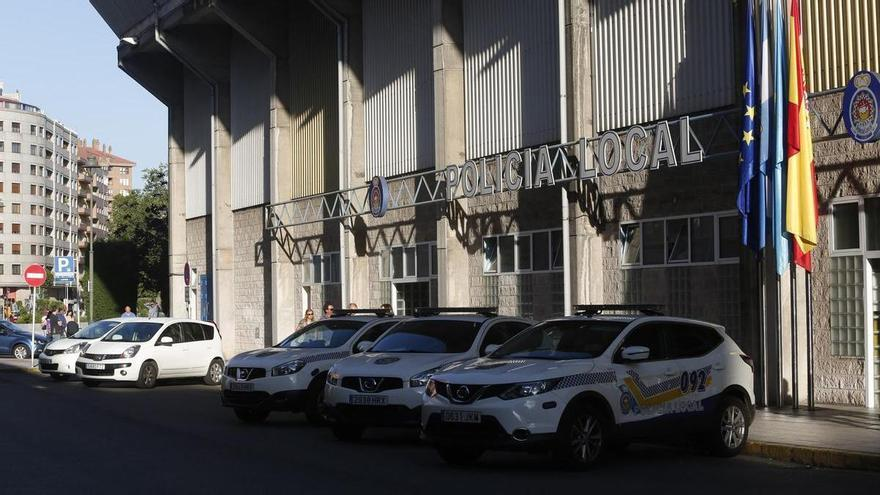

Avilés participa en una nueva reunión de la red europea In4Green
El Grupo de Acción Local URBACT In4Green de Avilés participa en un nuevo encuentro de la red europea In4Green, el tercero desde su constitución, desde hoy, martes 22, al jueves 24 de octubre en la localidad portuguesa de Vilanova de Famalicao. Famalicao es una de las integrantes de la red y recibe
al resto con el objetivo de mantener reuniones de trabajo y dar a conocer sus equipamientos industriales y centros de innovación.

La Policía Local de Avilés se hace cargo de dos niños tras quedarse su padre, ebrio, dormido en un bar
Agentes de la Policía Local de Avilés atendieron este domingo a las 17.40 horas la denuncia a un hombre de 46 años,
vecino de Pravia, por incumplimiento de los deberes de la custodia de los menores que tenía a su cargo.
El hotel de Avilés que se enfadó con Booking por el precio de las habitaciones busca una solución
La plataforma ofrece habitaciones familiares a precio de estándar y más baratas que las dobles,
lo que ha provocado la reacción de los hosteleros, obligados a tomar una drástica decisión
La madre que arrojó a su hija por la ventana en Avilés pierde la patria potestad
El juzgado de Primera e Instrucción Número 5 de Avilés ha retirado la patria potestad a la madre que el pasado miércoles,
5 de abril, se arrojó al vacío desde un quinto piso en la avenida de Los Telares junto con su hija.